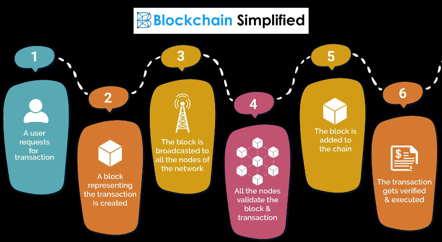

Es denominen tecnologies habilitadores totes aquelles que permeten que altres tecnologies es desenvolupen i funcionen. Per exemple: si una empresa crea un robot de rescat que se serveix de la xarxa 5G per a comunicar-se amb la base, de la tècnica machine learning per a detectar a les víctimes i de la visió artificial per a distingir els objectes, les tres innovacions esmentades (5G, machine learning i visió artificial) són tecnologies habilitadores digitals.
Habilitadors digitals (HD) i tecnologies habilitadores digitals (THD) són termes que s’utilitzen de manera indistinta i volen reflectir aquest procés de incorporació contínua de millores tecnològiques. Podem tenir clar on volem arribar, però per on comencem?
La clau consisteix en donar petits passos, caminant cap a un objectiu final al qual es pot arribar per diferents camins, recordant que el més important no és adoptar més i més tecnologies, sinó anar connectant i integrant totes les innovacions que es vagen incorporant.
Qualsevol negoci que vulga digitalitzar-se ha de conéixer primer tots els habilitadors digitals per analitzar com cadascun d’ells pot impulsar la innovació, l’eficiència, la competitivitat, el tracte al client i el respecte al medi ambient. Quines són aquestes THD? Poden agrupar-se en categories? Es poden connectar entre si totes elles?
Totes les tecnologies habilitadores digitals (THD) comparteixen uns trets que han donat lloc a que se les agrupe sota el mateix nom. Es tracta de tecnologies que faciliten la digitalització perquè comparteixen les següents característiques:
- Versatilitat. Poden aplicar-se en una àmplia varietat d’indústries i contextos. Per exemple: l'IoT pot utilitzar-se tant per connectar màquines i robots en una cadena de producció en sèrie, com per automatitzar l’encesa i apagada de llums, calefacció, persianes i ordinadors en una oficina.
- Automatització. Moltes THD són autònomes a l’hora de realitzar la seua feina ( un programari de comptabilitat realitza els càlculs financers per si sol, una vegada que se li han introduït les dades d’ingressos i despeses, o una impressora 3D pot fabricar una casa quan s’ha programat amb el pla i les dimensions desitjades ).
- Interconnexió. Es comuniquen entre si ( les botigues en línia tenen integrada la tramitació d’una compra amb el cobrament a la targeta bancària del client i amb l’enviament d’un correu electrònic per confirmar que la transacció s’ha fet correctament , o empreses que connecten les targetes corporatives amb els seus sistemes de comptabilitat, de manera que els empleats carreguen les seues despeses de manera efectiva ).
- Analítica avançada. Proporcionen informació i dades en temps real, però també permeten la seua anàlisi (un sistema de reconeixement facial permet l’accés de l’empleat a l’empresa i registra la seua hora d’entrada i sortida del treball. Al mateix temps, elabora gràfics i estadístiques sobre la seua puntualitat, nombre de vegades que abandona l’oficina, hores extra realitzades... El sistema pot semblar controlador, però molts empleats agraeixen que tot quede registrat, perquè tenen un mitjà de prova en cas de conflicte laboral amb l’empresa ).
- Seguretat. Iinclouen mesures de protecció avançades contra les ciberamenaces, com el xifrat de dades i l’autenticació en diversos passos ( les empreses que admeten pagaments per Internet no només connecten amb el banc del client, sinó que també envien un missatge al seu mòbil que ha de ser respost en un temps breu ).
- Escalabilitat. Poden créixer i adaptar-se a mesura que les necessitats d’una organització evolucionen ( les experiències de realitat virtual d’un restaurant punter poden incorporar escenaris diferents per ambientar el seu espai, incorporant nous elements gràfics i sonors, segons les sensacions que vulga crear en els seus comensals ).
- Personalització. Permeten la personalització d’experiències per a usuaris o clients, la qual cosa millora la seua satisfacció i la seua fidelització ( un sistema informatitzat de gestió de recursos humans que permetés als empleats flexibilitzar els seus horaris per conciliar la vida laboral i familiar, que utilitzés interfícies intuïtives per consultar la seua nòmina, sol·licitar un dia de permís o informar d’una baixa mèdica, o que ens recordés realitzar descansos en l’ús de l’ordinador per evitar fatigar la vista ).
- Estalvi. Incrementa les despeses inicials, ja que aquestes tecnologies no són barates, sobretot si el seu ús encara no està massificat. No obstant això, a llarg termini pot suposar una reducció important de costos ( un restaurant on una nevera intel·ligent pot decidir si escasseja algun aliment. Com que el menú és sempre el mateix, no seria molt difícil programar l’electrodomèstic per a aquesta funció ).
- Innovació. són impulsors de la innovació, ja que permeten la creació de nous productes, serveis i models de negoci (la impressió 3D ha donat lloc a un ventall de possibilitats abans inimaginable ).
No hi ha una llista única i exclusiva d’aquestes tecnologies, es tracta d’una classificació en constant revisió, ja que els avenços substitueixen unes tecnologies per altres.

Internet de les coses (IoT, Internet of Things)
Connexió de dispositius i objectes físics a Internet, que permet la recopilació de dades en temps real i l’automatització de processos, com l’apagat de màquines al final de la jornada.
Inclou també l’Internet dels Pagaments (IoP), que s’utilitza per comprar a través d’objectes IoT, com mòbils o cotxes.
Intel·ligència artificial (IA)
La IA involucra sistemes informàtics que poden desenvolupar tasques que normalment requereixen intel·ligencia humana. Aixó inclou l'aprenentatge automàtic, el processament de llenguatge natural, la visió per ordinador i altres disciplines que permeten a las màquines aprende i exercir funcions complexes.
Moltes empreses estan invertint en intel·ligència artificial general (IAG), que es basa a crear un programari amb intel·ligència similar a la humana i amb capacitat d'autoaprendre. Actualment, la intel·ligència artificial està basada en models entrenats per a fer tasques concretes, com crear imatges, fer música, editar vídeo, interactuar amb clients, etc. El problema és que una IA especialitzada a crear imatges no és capaç de generar pàgines web i una IA especialitzada en edició de vídeo no pot usar-se per a la conducció autònoma d'un vehicle.
Big data i anàlisi de dades
Aquestes tecnologies es centren en la gestió i l'anàlisi de grans volums de dades. El Big Data aborda la recopilació i l'enmagatzematge de dades a gran escala, mentre que l'analítica s'enfoca a extreure coneixements i patrons significatius a partir d'aquestes dades.
La capacitat de recopilar, emmagatzemar i analitzar grans volums de dades per extreure informació pot ser un avantatge competitiu. Per exemple: Amazon utilitza el machinelearning per realitzar una anàlisi predictiva de compres recomanant productes a l’usuari segons els seus interessos, mesurats per les seues compres prèvies en la plataforma.
El big data s'està utilitzant, per exemple, en la sanitat, per a l'estudi massiu de dades mèdiques, genètics i imatges, amb la finalitat d'optimitzar els diagnòstics i tractaments. També es pot utilitzar a les ciutats per a analitzar les dades sobre trànsit, consum energètic i serveis públics, amb el propòsit de millorar la planificació i el benestar dels ciutadans.
Computació en el núvol
Implica l'accés a recursos informàtics, com l'enmagatzematge, el processament i les aplicacions, a través d'una infraestructura de xarxa que pot ser local o remota (Internet), o bé una barreja de totes dues.
Ciberseguretat
Tecnologies i bones pràctiques que protegeixen sistemes, xarxes i dades de les amenaces cibernètiques, el que és essencial en un entorn digital.
En OT protegeix els sistemes i dispositius que controlen els processos físics en infraestructures industrials, com les fàbriques, xarxes elèctriques, sistemes de transport i plantes químiques; mentre que en IT s'enfoca a protegir els sistemes, xarxes, dades i aplicacions en entorns digitals tradicionals, com els servidors, ordinadors i serveis en el núvol.
Realitat virtual (VR) i realitat augmentada (AR)
Experiències digitals immersives. La realitat augmentada enriqueix l’entorn real amb elements digitals, mentre que la realitat virtual crea un entorn simulat. Pots veure un exemple de catàlegs d’empresa en AR en aquest enllaç: https://www.pixeldreams.info/servicios-3d/realidad-aumentada/catalogos
Blockchain
Proporciona un registre descentralitzat i segur de transaccions, el que és útil per a la gestió de la cadena de subministrament. Proporciona una gestió segura i transparent de transaccions. S'utilitza comunament en aplicacions financieres, però també té aplicacions en la cadena de subministrament, la gestió de contractes i l'autenticació o característica de descentralització i seguretat, cosa que ha portat a la seva adopció en diverses àrees on la confiança i la transparència són crucials.
En el siguiente video se da una explicación más detallada de blockchain aplicado a las criptomonedas: https://youtu.be/2fRYPDS_jrM?si=P21pRBzWzc2Eon9S

5G
La xarxa de cinquena generació proporciona una connectivitat més ràpida i fiable, la qual cosa habilita aplicacions d’IoT, vehicles autònoms i més. Ofereix, en comparació amb les seues predecessores, més velocitat, major capacitat, una eficiència superior i menys latència. La diferència de velocitat és evident; per exemple, una pel·lícula de dues hores de duració es pot descarregar en 10 segons, mentre que amb la xarxa 4G es tardarien set minuts, que es prolongarien fins a les vint-i-sis hores si s'utilitzara la xarxa 3G.
Entre les aplicacions que es veuran beneficiades s'inclouen els jocs en temps real o serveis crítics (seguretat, salut). Aquesta tecnologia permetrà que la porta s'òbriga automàticament en acostar-te a ella després d'escanejar la teua cara amb una cambra sense necessitat que hages de parar-te. Més informació en: https://youtu.be/acyvzwg3uoy?si=tjp-hqxtvfhfjd_6
Robòtica colaborativa (cobótica)
Robots i automatització robòtica de processos (RPA) que juguen un paper important en l’automatització de tasques i processos. L’automatització robòtica de processos utilitza programari per realitzar tasques repetitives com generar nòmines, ordenar pagaments a proveïdors, etc.
Amb la robòtica col·laborativa (cobotica), els humans i els robots treballen conjuntament de manera eficient i segura. Aquests robots estan dissenyats per a ajudar als treballadors i evitar-los tasques perilloses, físicament exigents o repetitives. Les factories més importants i capdavanteres compten amb centenars de cobots en les seues línies de producció.
La tecnologia dels robots humanoides serà també molt important a Europa, atés que la nostra població envellida, necessitarà de la seua ajuda no sols en les tasques de fabricació, sinó també en els treballs d'assistència personal i cura dels ancians.
Impressió 4D
Permet la creació d'objectes tridimensionals dinàmics que no requerisquen cables ni circuits. Els materials, una vegada impresos, podran canviar de grandària, forma o color, depenent dels materials amb els quals estiga imprés l'objecte, que podrà respondre a estímuls com la llum, la calor, la humitat, la pressió o el magnetisme.
Entre els materials "intel·ligents" destaquen els teixits vius, els polímers actius, les resines d'hidrogel, les fibres de carboni, les fustes i els teixits programables, entre altres. Aquests materials reben l'estímul i es transformen per a complir funcions específiques. Poden acoblar-se, descompondre's, reparar-se o canviar la seua configuració de manera autònoma, interactuant amb l'entorn per a adquirir noves propietats..
Biometria
Utilitza característiques biomètriques com empremtes digitals, reconeixement facial i veu per a l’autenticació i la seguretat. Per exemple: desbloqueig de smartphones amb l’empremta digital.
https://youtu.be/_Qvd4f1Xt30?si=bfd1zmfk1MxCe8RI
Bessons digitals
Existeixen molts en el mercat per a la simulació de motors, persones, fàbriques, ciutats, xarxes d'ordinadors, aerogeneradors, el cos humà, etc. Els enginyers poden servir-se d'ells per a detectar problemes, optimitzar dissenys i prendre decisions abans de traure un producte a un servei al mercat.
Distributed ledger technology (DLT)
És una tecnologia que permet gestionar informació de manera descentralitzada. La informació se sincronitza a través de transaccions processades per una sèrie de nodes interconnectats. El principal avantatge és que el registre principal ( o ledger) està distribuït entre diversos nodes. No és necessària una autoritat central, la qual cosa fa a aquesta tecnologia més resistent a la censura o les manipulacions externes.
IBM ha creat un sistema DLT per a optimitzar els processos de comerç internacional i logística marina.
Computació difusa (fuzzy logic)
És una eina matemàtica i computacional que maneja conceptes imprecisos o incerts, a diferència de la lògica booleana, que opera únicament amb valors absoluts (veritable o fals). En la lògica difusa, igual que en la vida diària, els valors no són categòrics, sinó que s'expressen en termes de graus de pertinença a 0 o 1, la qual cosa reflecteix la naturalesa ambigua de molts fenòmens del món real.
Aquesta flexibilitat converteix la lògica difusa en una eina útil per a abordar problemes complexos, en els quals les variables no poden definir-se amb precisió. Per exemple, en l'àmbit mèdic, els símptomes d'un pacient rares vegades són completament clars o categòrics. La lògica difusa facilita l'anàlisi d'aquests casos, i permet identificar patologies amb major precisió, en manejar dades ambigües o incompletes.
Metaverso
El món virtual del metaverso sempre està funcionant, encara que l'usuari deixe de jugar, el món continua evolucionant i canviant.
Metaverso, realitat virtual i realitat augmentada són termes enllaçats. En aquests mons virtuals es poden tindre experiències, com anar a concerts, comprar o vendre objectes.